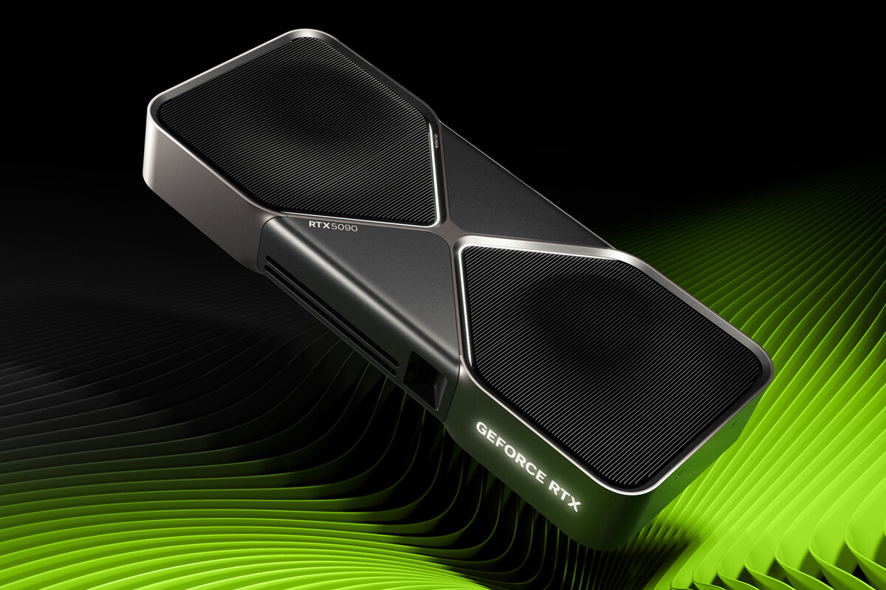

🖥️ NVIDIA presenta las RTX 5090
Publicado: 10/05/2026 | Por: Redacción Mundo Gamer
NVIDIA ha presentado oficialmente su nueva generación de tarjetas gráficas: la serie RTX 5000, liderada por la potente RTX 5090.
Con un rendimiento hasta 2.5 veces superior a la RTX 4090, la nueva GPU integra tecnología de trazado de rayos de cuarta generación y DLSS 4, que promete multiplicar los FPS sin pérdida de calidad visual.
El precio de la RTX 5090 será de $1,999 USD y estará disponible a partir de septiembre de 2026.
← Volver a noticias